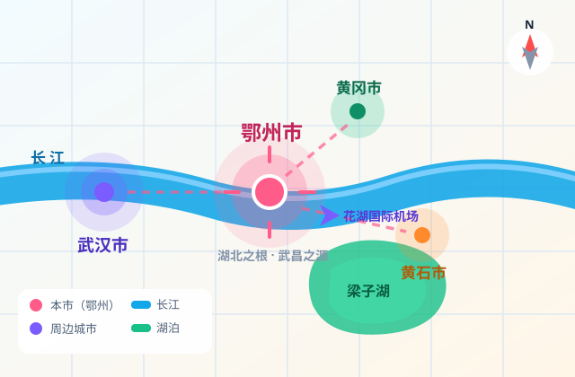
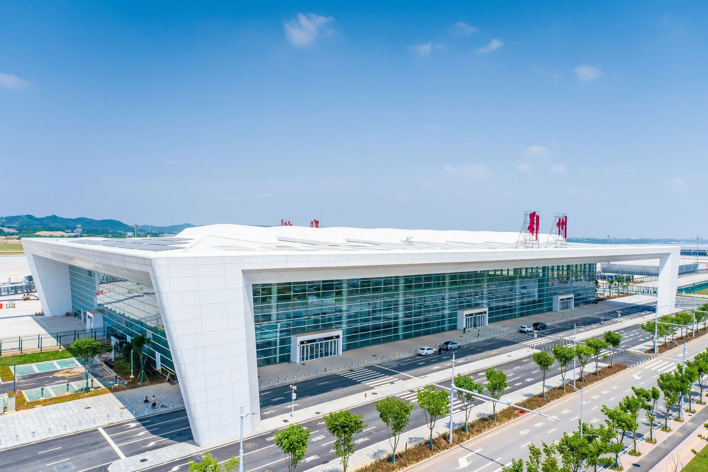

106.88万人
常住人口
2025 年末 · 城镇化率 70.39%
1416.02亿元
地区生产总值
2025 年 · 增长 6.7%，全省第二
3+2
区与功能区
鄂城 / 华容 / 梁子湖 + 葛店、临空
12.5万元
人均 GDP
约为全国平均水平的 1.3 倍
数据来源：鄂州市人民政府门户网站、鄂州市统计局（2025 年口径）。
ABOUT EZHOU
长江南岸，一座"小而厚"的城
鄂州在湖北省东部、长江南岸，西边紧挨着武汉，东边连着黄石，北边和黄冈隔江相望。 它是武汉都市圈同城化核心区城市，也是长江中游城市群的重要节点。
说它"小"，是因为 1596 平方千米的面积在湖北 17 个市州里垫底； 说它"厚"，是因为这里的每一寸土都能踩出故事—— 帝尧时叫"樊国"，夏时是"鄂都"，殷商为"鄂国"， 春秋战国时楚王熊渠封儿子熊红为鄂王，湖北简称"鄂"就是从这儿来的。
看完整城市档案 →
一个小知识：三国时的"武昌"不是今天的武汉武昌，而是今天的鄂州。
孙权取"以武而昌"之意改名，所以鄂州又叫"吴都""古武昌"。
EXPLORE
五个入口，读懂鄂州
从千年吴都到凌晨起飞的货机，从江心古阁到湖里的一尾鱼——挑一个你感兴趣的进去看看。

HIGHLIGHT
凌晨三点，我的家乡在飞
鄂州花湖国际机场是我国首个、亚洲首个专业货运枢纽机场，也是世界第四个。 2022 年 7 月 17 日投运，2024 年 3 月经国务院批复对外开放。
枢纽货量走得很快：2023 年 24.5 万吨，2024 年 102.5 万吨，2025 年突破 148 万吨。 截至 2025 年累计开通货运航线 111 条，业务覆盖五大洲 170 个国家和地区， 口号是"一夜达全国、隔日连世界"。
从梁子湖里起网的螃蟹，24 小时就能出现在泰国曼谷的餐桌上。 ——这条冷链的起点，就在我家旁边看看这座机场 →